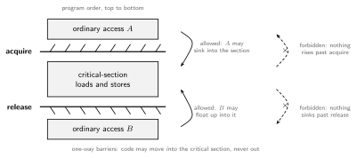

Coherence coordinates copies of individual locations. A memory consistency model specifies allowed outcomes across locations and threads, including which program-order relations must be preserved.
Hardware can execute operations out of order only when the resulting observations obey the ISA. The following mechanisms can expose reorderings between different addresses:
| Reordering | Mechanism |
|---|---|
| store → store | non-FIFO store buffering |
| load → load | independent loads execute out of order |
| load → store | a later store becomes visible before an older load completes |
| store → load | a younger load bypasses buffered stores to other addresses |
The last one is the important case, because even a fully in-order core with a plain FIFO store buffer does it:
Lamport (1979): a system is sequentially consistent (SC) if every execution is equivalent to some single interleaving of all cores’ memory operations in which each core’s own operations appear in program order. Memory behaves as if one switch served one core at a time. All four orderings above (load/store → load/store) are preserved.
Two litmus tests capture what SC promises (all variables initially 0). These are machine-memory pseudocode, not unsynchronized C/C++ programs:
Message passing: can r2 = 0?
| Core C1 | Core C2 |
|---|---|
S1: data = NEW |
L1: r1 = flag (spin until SET) |
S2: flag = SET |
L2: r2 = data |
Dekker / store buffering (SB): can
r1 = r2 = 0?
| Core C1 | Core C2 |
|---|---|
S1: x = NEW |
S2: y = NEW |
L1: r1 = y |
L2: r2 = x |
Under SC, both outcomes are forbidden. Message passing orders the data store before the observed flag and subsequent data load. In SB, both zero reads would require a cycle in the global order. Both outcomes happen on real machines, and each corresponds to one row of the reorder table: message passing breaks under store→store or load→load reordering, Dekker under store→load.
Implementing SC does not require physically serial execution. A conservative design completes operations in order; an aggressive design speculates and replays when observed ordering would violate SC. Coherence alone is insufficient.
Total Store Order (SPARC, x86, RISC-V’s Ztso option) is SC plus one legalized optimization: the FIFO store buffer. Program order is preserved except store → load. Consequences:
r1 = r2 = 0 is
allowed; message passing still works.For ordinary cacheable x86 memory, mfence or an
appropriately ordered locked operation can enforce Store→Load ordering.
Details differ for device memory, non-temporal accesses, and other TSO
ISAs.
SC and TSO constrain observable ordering, even when implementations overlap misses speculatively. Relaxed models preserve selected dependency, same-address, and synchronization orders while allowing other reorderings; the programmer marks the few places where order matters. Two idioms cover almost all of them:

Acquire prevents subsequent protected accesses moving before acquisition; release prevents earlier protected accesses moving after release. These ordering descriptions are not blanket permission to move arbitrary operations across synchronization.
RISC-V’s default model is RVWMO. Base memory operations, atomics, and fences obey its preserved-program-order rules:
fence rw,rw orders prior memory reads/writes before
subsequent memory reads/writes. fence r,r and
fence w,w select subsets; fence.tso omits
ordinary Store→Load ordering. Device I/O needs the appropriate
i/o classes..aq/.rl ordering bits. Ordinary base
loads/stores do not have these bits; the separate Zalasr extension adds
load-acquire/store-release instructions.Arm (AArch64) is a close cousin (weak + acquire/release + dependency ordering); IBM Power is weaker still (stores may become visible to different cores at different times, i.e. no write atomicity).
The RISC-V A extension provides two RMW mechanisms:
single-instruction AMOs (amoadd,
amoswap: load and store adjacent in the global order) and
the LR/SC pair, where sc succeeds only if
the reservation remains valid; conflicting writes to the reservation set
cause failure, and other failures are permitted (a building block for
lock-free operations; Zacas separately provides compare-and-swap). A
spinlock in RVWMO:
li t0, 1
retry: lr.w.aq t1, (a0) # load-reserved, acquire
bnez t1, retry # lock held? spin
sc.w t2, t0, (a0) # store-conditional 1
bnez t2, retry # lost the reservation? retry
# ... critical section ...
amoswap.w.rl x0, x0, (a0) # release: store 0The .aq keeps the critical section from leaking upward,
.rl from leaking downward; no full fence needed.
Language memory models govern source programs; ISA models govern machine instructions. Compilers must preserve the language contract when mapping between them.
“No data race” alone is not a universal promise of SC for every language-level atomic ordering.
Author: Sai Govardhan (saigov14@gmail.com)
License: MIT.